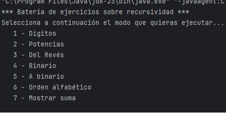
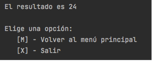

Crea un programa principal que muestre un menú de opciones y permita ejecutar cualquiera de los ejercicios que realices a continuación. Por ejemplo:

Una vez ejecutado el ejercicio deseado, debemos preguntar siempre al usuario si quiere volver al menú principal o salir del programa. Por ejemplo:

Usa el método:
public static void borrar() throws IOException, InterruptedException {
new ProcessBuilder("cmd", "/c", "cls").inheritIO().start().waitFor();
}para limpiar la pantalla antes de imprimir de nuevo el menú principal.